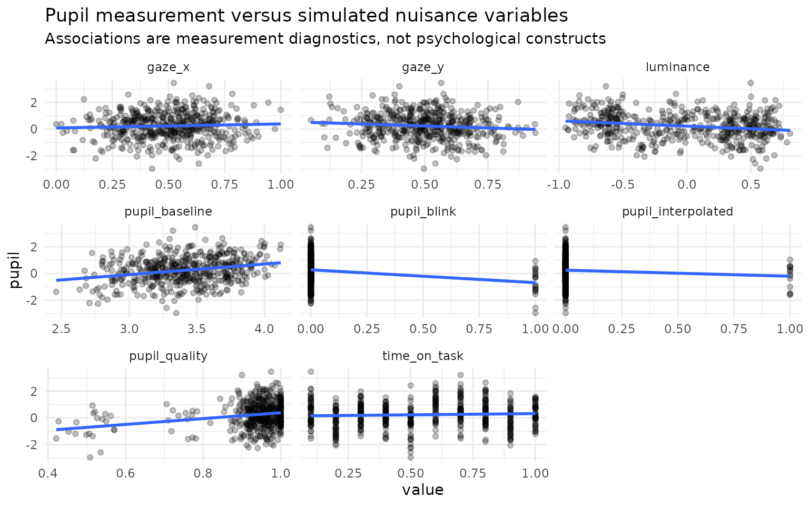
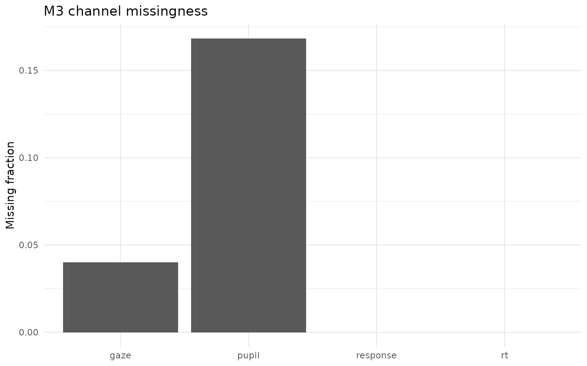
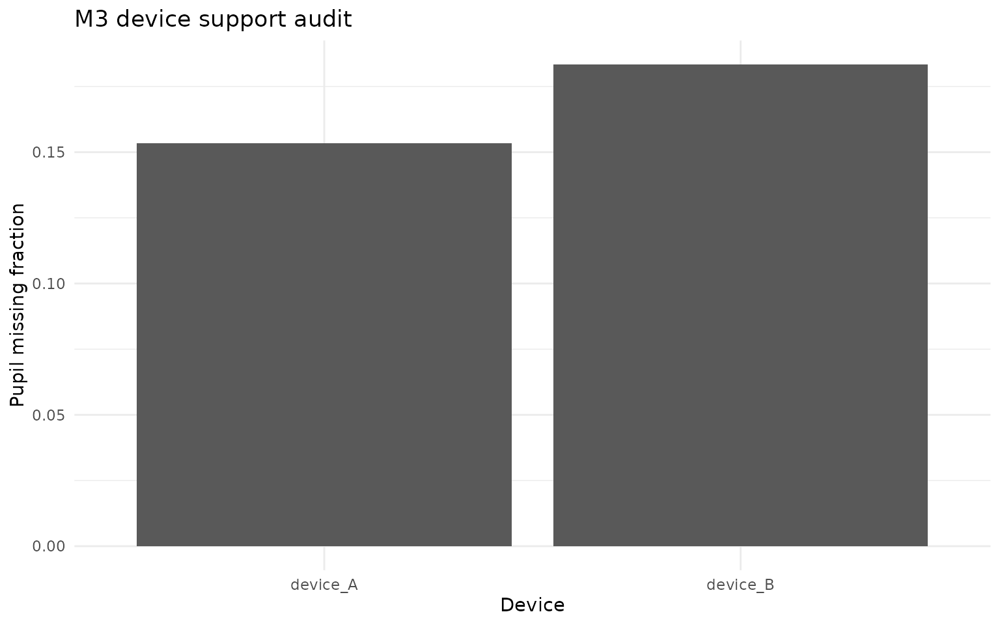

M3 pupil measurement: confounds, quality, and missingness
Source:vignettes/m3-pupil-confounds-measurement-0-10.Rmd
m3-pupil-confounds-measurement-0-10.RmdPupil is a measurement, not a label
Pupil size depends on more than the process an analyst hopes to study. M3 therefore treats baseline pupil, luminance, gaze X/Y, measurement quality, blink status, interpolation status and time-on-task as measurement variables. The model does not rename residual pupil variation as cognitive load. This distinction is central to the 0.10 architecture.
The reference preprocessing literature also motivates conservative handling. Mathôt et al. (2018; DOI 10.3758/s13428-017-1007-2) show that invalid baseline values caused by blinks or data loss can distort baseline correction. Gagl et al. (2011; DOI 10.3758/s13428-011-0109-5) document systematic gaze-position effects on measured pupil size. M3 therefore records nuisance availability and refuses to silently impute a nuisance variable that was explicitly supplied but is missing on an observed-pupil trial.
Inspect the contract
sim <- simulate_multimodal_m3(
n_person = 60,
n_item = 10,
pupil_missingness = "quality",
seed = 20260815
)
audit <- audit_multimodal_m3_identifiability(sim)
audit$pupil$nuisance
#> covariate available degenerate center scale
#> baseline baseline TRUE FALSE 3.40116829 0.3185509
#> luminance luminance TRUE FALSE -0.01942274 0.4958308
#> gaze_x gaze_x TRUE FALSE 0.50079275 0.1782709
#> gaze_y gaze_y TRUE FALSE 0.50576483 0.1581575
#> quality quality TRUE FALSE 0.89758913 0.1550746
#> blink blink TRUE FALSE 0.11000000 0.3131508
#> interpolated interpolated TRUE FALSE 0.04833333 0.2146486
#> time_on_task time_on_task TRUE FALSE 0.55000000 0.2874678
plot(sim, type = "pupil_confounds")
#> `geom_smooth()` using formula = 'y ~ x'
plot(audit, type = "missingness")
plot(audit, type = "device")
The nuisance variables are standardized over observed pupil rows. A degenerate nuisance variable is recorded and disabled rather than given an unstable coefficient. If an expected nuisance is completely absent, M3 records it as unavailable; absence is not treated as evidence that the confound was controlled.
Missingness stress is part of the model evidence
The fitted reference likelihood is currently ignorable with respect to channel missingness. This is a declared limitation. Simulation supports several pupil dropout mechanisms:
mechanisms <- c("mcar", "quality", "gaze", "ability", "device")
missing <- vapply(mechanisms, function(m) {
z <- simulate_multimodal_m3(
n_person = 40,
n_item = 8,
pupil_missingness = m,
seed = 100 + match(m, mechanisms)
)
mean(is.na(z$data$pupil))
}, numeric(1))
missing
#> mcar quality gaze ability device
#> 0.156250 0.159375 0.168750 0.175000 0.178125quality creates dropout related to pupil quality,
gaze links pupil availability to the gaze process,
ability creates a deliberately non-ignorable person-side
stress case, and device creates differential channel
availability across devices. These are sensitivity designs, not claims
that a particular empirical dataset follows one mechanism.
Device and session effects
The simulation also retains device, session and sampling-rate metadata. The first summary-level likelihood does not automatically estimate arbitrary device equivalence. Device-specific shifts and dropout are used to test whether the pupil dimension remains stable under transport stress. A later empirical validation programme should use repeated-device or calibration data before making invariance claims.
Practical rule
A pupil channel should be considered defensible only when its measurement provenance is inspectable, its nuisance variables and missingness are audited, its contribution survives falsification controls, and the inferential result remains appropriately conditional on those assumptions.